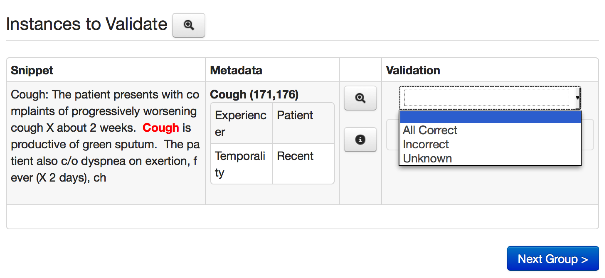
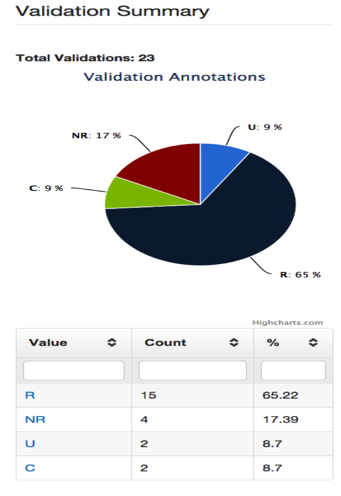
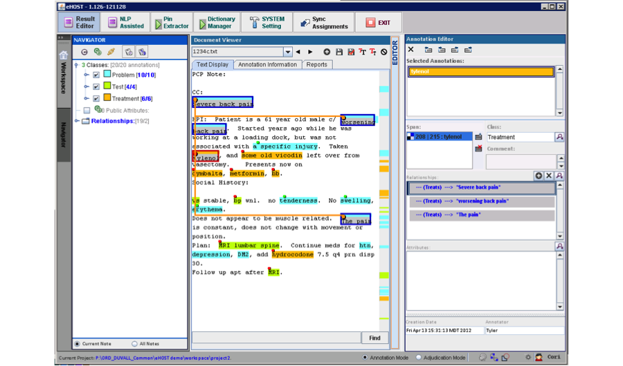
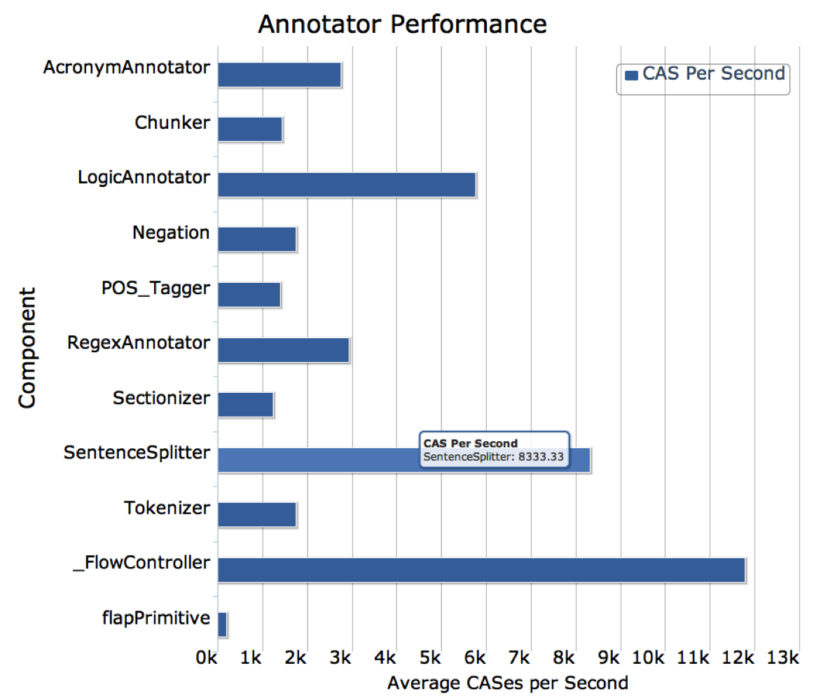

Related Tools and the Leo Universe
 Additional tools and packages that utilize Leo
Additional tools and packages that utilize Leo
Chart-Review
Chart Review is a manual, multi-level annotation tool. Its configurable medical record interface, allows annotation at any level of the record (i.e. note part or whole, lab value part or whole, patient part or whole, etc.) in a configurable, multi-annotator workflow. Annotating within the context of the whole patient chart allows reviewers to follow a more natural clinical process of finding and aggregating patient information, while still supporting powerful annotation capabilities.
Chart Review displays all aspects of a medical record, from any database environment. Though Chart Review was built to specifically allow its use in the VINCI research environment (taking into account the VINCI project database configuration and policies), it can be used in any database environment where medical records may be kept. Access to the data layer is configurable in the UI, allowing the tool to access any database environment, with any database schema definition.
The tool also allows configuration of annotation workflow processes which make annotation tasks available to multiple annotators using the application simultaneously. Annotations are saved and viewable in downstream tasks and processes, whether inside or outside of the system. This tool can share inputs and outputs with other NLP processes and annotation tools through standard definitions and standard access of clinical elements (i.e. documents, records) and annotations. In addition, annotation statistics are provided for workflow analysis.
Chart Review provides features such as:
-
Definition of clinical elements (notes, labs, radiology, problems, meds, etc.)
-
Definition of available process types (single step, multi-step, graph, etc.)
-
Definition of projects (users, workflow processes, tasks, views, cohorts, and mapping to the data source, etc.)
-
Reports (workflow process, annotation activity, etc.)
-
User definition
-
Project workflow maintenance and trouble shooting tools and utilities
- System performance monitoring
-
System help
The features of Chart Review listed above may only be accessible to users with certain roles and privileges. A typical annotator, for example, may not have access to the project definition features that are available to a project coordinator. Chart Review is a public domain software package that is developed and maintained by the Department of Veterans Affairs. It is widely used in the VA VINCI research environment as well as in university settings. It may be used in commercial settings in the future.
Chex
Chex is a web-based application that can be configured for any NLP system output. NLP system annotations and any associated features are displayed in a user-defined context window from the document. In cases where more context is needed, a single click will pop up the full document text with the annotation information. The interface can be customized by the administrator. In order to simplify management of annotations tasks, Chex is integrated with Business Process Management 2.0 for defining validation workflows, and utilizes a common database schema for reading and writing annotations. Chex uses the open source product Activiti ( http://activiti.org/ ) for its workflow implementation, allowing for flexibility in how processes are defined and used, and following existing process definition standards. Chex is database platform independent, and can draw text and annotation data from any major databases.
 Chex Annotator interface.
Chex has two levels of access – administrator and user. Administrators have the ability to create new validation projects, create user accounts, assign specific users to annotation projects, and review summary reports. User level access is given to clinical specialists that serve as human reviewers. Annotation project definition includes the following elements: database connection information, annotation schema definition, a list of assigned reviewers, and annotation instructions for the chart reviewers. Once a validation project is created and users are assigned, each user has the ability to specify the number of annotations to draw for review and enter validation decision for each presented validation annotations. Each reviewer can be assigned to multiple validation projects at the same time, and each validation project can have multiple assigned reviewers. Once NLP system output is reviewed and validated for accuracy, Chex summary reporting functionality can be used to review annotations at a project level or drill down to an individual annotation level.
 Automatically generated reports
eHost
The Extensible Human Oracle Suite of Tools (eHOST) is an open source tool used for semantic annotation and lexical curation.
The output from eHost is saved as XML files in Knowtator format. Leo has Knowtator reader functionality that converts eHost annotations to UIMA annotations. eHOST also provides other more advanced semi-automated features that allow the user to pre-annotate information using dictionaries and regular expressions,easily curate and navigate annotated information within an active document corpus, and verify annotations using linguistic or syntactic rules checks.
 eHost Interface showing concepts, attributes and relationships.
JAM
When an NLP system built in UIMA AS incorporates a relatively large number of various, possibly distributed components running on a network, monitoring and tuning the system becomes challenging. The Java Management Extensions (JMX) analytics tools enable remote monitoring of UIMA AS component performance and measurement for each individual component as well as aggregating the component performance across servers. However, in the current implementation of UIMA AS the monitoring results do not persist and their format does not allow for an automatic system optimization. JMX Analysis Module (JAM) facilitates easier gathering and use of performance data in UIMA AS.
The design of JAM allows gathering statistics from various UIMA AS services, aggregating the data into meaningful information, viewing the system performance at broad and detailed levels, and comparing analytics over time. The tool gathers, aggregates, and resets metrics at specified intervals, and allows for the visualization of those metrics in both aggregate and detail form via a web based application. These visualizations easily show performance of different annotators in the system, and allow for an administrator to optimize deployments by replicating slower services as needed to better distribute the load.
JAM is a standard grails 2.1.0 app. You can download grails from http://grails.org. It has given me fits building with Maven, so to run it do grails RunApp (for testing locally). When ready to deploy, grails prod war will create the war file that can be deployed. Jenkins should be able to build it as well, but I had problems with that, so just build it locally. It uses standard grails methodology
 Example Jam Output